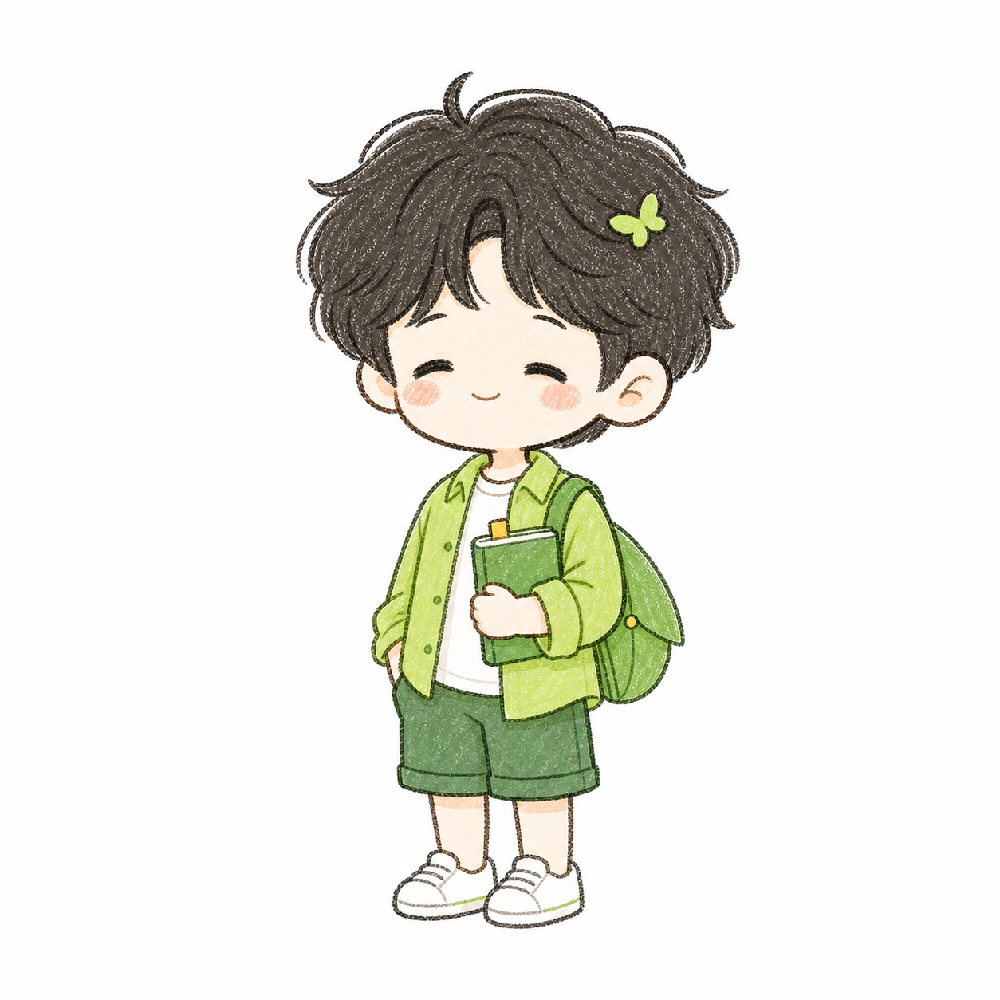

先听见感受，再理解问题。
LUCION · PERSONAL COMPANION
慢一点，
也能向前。
以应用心理学的细腻观察，连接 人、工作与 AI 陪伴。这是一个清新、明亮而不喧哗的个人空间。
Lucion · 陈晞

grow gently
让 HR、心理学与技术拥有更温柔的连接。
在持续记录与小步行动中慢慢向前。
LUCION · PERSONAL COMPANION
以应用心理学的细腻观察，连接 人、工作与 AI 陪伴。这是一个清新、明亮而不喧哗的个人空间。
Lucion · 陈晞

先听见感受，再理解问题。
让 HR、心理学与技术拥有更温柔的连接。
在持续记录与小步行动中慢慢向前。